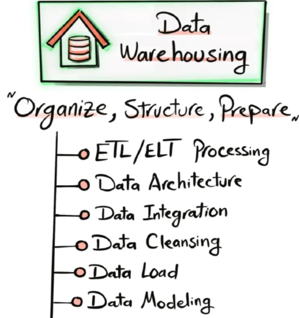
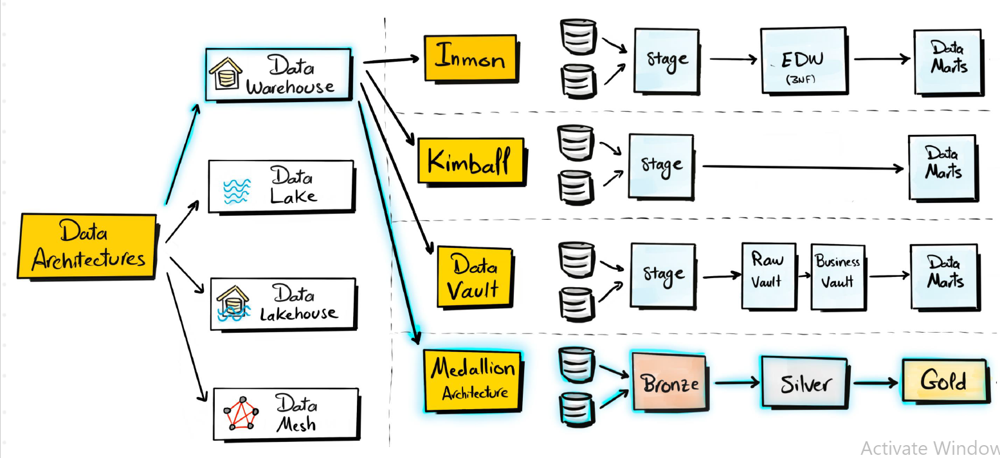
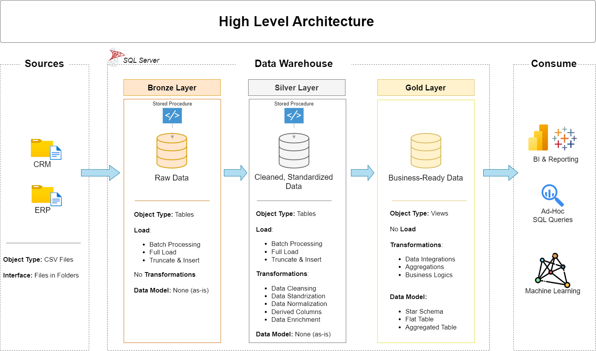
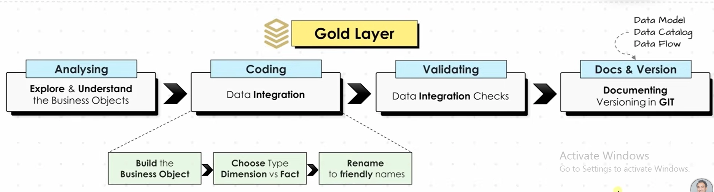
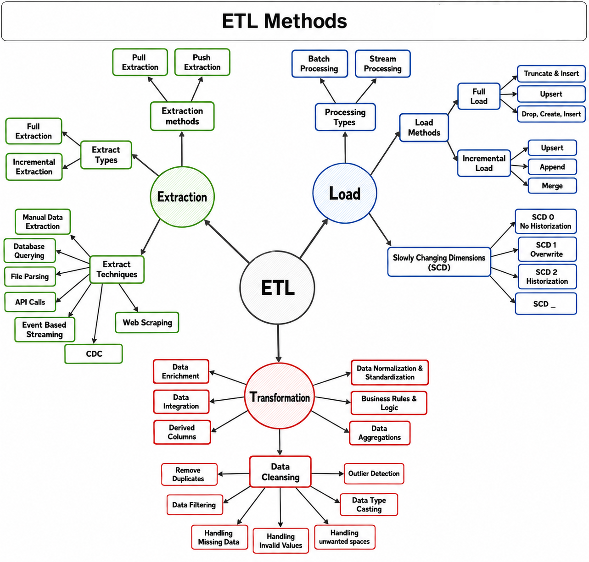
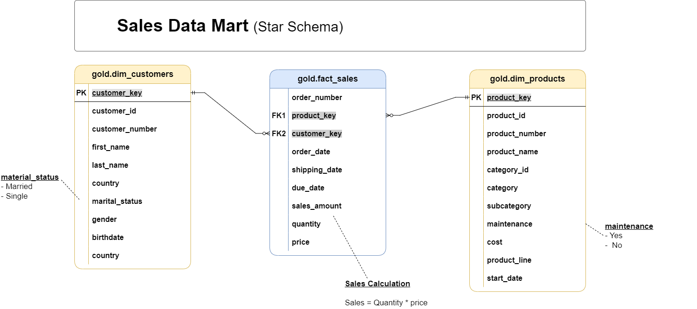
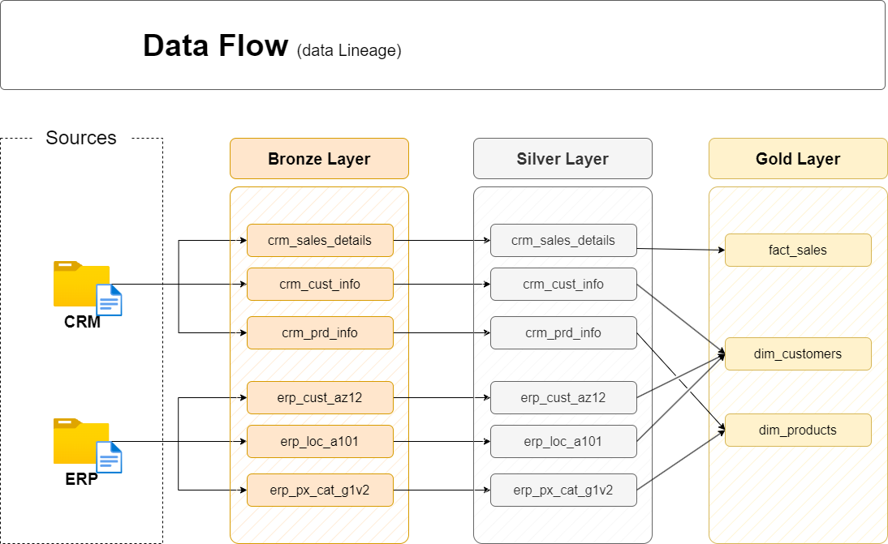

README
Data Warehouse (SQL Server)
Welcome to the Data Warehouse repository.
This is an end-to-end data warehouse project that transforms raw ERP + CRM sales data (CSV files) into a clean, reliable, and analysis-ready model in SQL Server, following the Medallion Architecture (Bronze → Silver → Gold).
Table of Contents
Objective
Develop a modern data warehouse using SQL Server to consolidate sales data, enabling analytical reporting and informed decision-making.
Specifications
- Data Sources: Import data from two source systems (ERP and CRM) provided as CSV files.
- Data Quality: Cleanse and resolve data quality issues prior to analysis.
- Integration: Combine both sources into a single, user-friendly data model designed for analytical queries.
- Scope: Focus on the latest dataset only; historization of data is not required.
The project only works with the current/latest version of the data. Previous versions or changes to records over time will not be tracked or stored.
Common historization approach: SCD (reference)
Historization is commonly implemented using Slowly Changing Dimensions (SCD):
- SCD Type 1: Overwrite the old value → no history
- SCD Type 2: Create a new record for each change → full history
- SCD Type 3: Keep limited previous values → partial history
In this project, the approach aligns with Type 1 (overwrite) where applicable.
- Documentation: Provide clear documentation of the data model to support both business stakeholders and analytics teams.
{kind=link}

High-level overview of the end-to-end data warehouse workflow.
Data Warehouse Concepts
- ETL/ELT Processing: Extracting, transforming, and loading data efficiently
- Data Architecture: Designing a scalable and maintainable warehouse architecture
- Data Integration: Combining data from multiple sources into a unified model
- Data Cleansing: Handling missing, duplicate, inconsistent, and inaccurate data
- Data Loading: Loading processed data into the warehouse efficiently
- Data Modeling: Designing fact & dimension tables (star schema)
- Data Modeling: Designing fact and dimension tables to create a well-structured data model
TYPES OF ARCHITECTURE
{kind=link}

Data Architecture: Medallion Architecture
The data architecture for this project follows, Medallion Architecture Bronze, Silver, and Gold layers:
{kind=link}

Architecture diagram showing data movement across layers.

Medallion layers: Bronze (raw) → Silver (clean) → Gold (business-ready).
Bronze Layer (RAW DATA) Stores raw data as-is from the source systems. Data is ingested from CSV Files into SQL Server Database.

Bronze layer: raw ingestion tables.
Silver Layer (Cleansed / Standardized) This layer includes data cleansing, standardization, and normalization processes to prepare data for analysis. # Coding and Validating are in a loop till we get a nice satisfactory result.

Silver layer: iterative cleansing and validation.
Gold Layer (Business-ready / Star Schema) Houses business-ready data modeled into a star schema required for reporting and analytics. # Coding and Validating are in a loop till we get a nice satisfactory result.
{kind=link}

Gold layer: star schema tables for analytics.
Naming Convention
This section outlines naming conventions for schemas, tables, columns, and stored procedures.
General Principles
- Naming Conventions: Use snake_case, with lowercase letters and underscores (
_) to separate words.
- Language: Use English for all names.
- Avoid Reserved Words: Do not use SQL reserved words as object names.
Table Naming Conventions
Bronze Rules
- All names must start with the source system name, and table names must match their original names without renaming.
<sourcesystem>_<entity><sourcesystem>: Name of the source system (e.g.,crm,erp).
<entity>: Exact table name from the source system.
- Example:
crm_customer_info→ Customer information from the CRM system.
Silver Rules
- Silver keeps the same source-based naming as Bronze (data is transformed/cleaned, but naming remains source-aligned)
<sourcesystem>_<entity>- Example:
crm_customer_info→ Customer information from the CRM system.
- Example:
Gold Rules
- All names must use meaningful, business-aligned names for tables, starting with the category prefix.
<category>_<entity><category>: Describes the role of the table, such asdim(dimension) orfact(fact table).
<entity>: Descriptive name of the table, aligned with the business domain (e.g.,customers,products,sales).
- Examples:
dim_customers→ Dimension table for customer data.
fact_sales→ Fact table containing sales transactions.
Glossary of Category Patterns
| Pattern | Meaning | Example(s) |
|---|---|---|
dim_ | Dimension table | dim_customer, dim_product |
fact_ | Fact table | fact_sales |
report_ | Report table | report_customers, report_sales_monthly |
Column Naming Conventions
Surrogate Keys
- All primary keys in dimension tables must use the suffix
_key.
<table_name>_key<table_name>: Refers to the name of the table or entity the key belongs to.
_key: A suffix indicating that this column is a surrogate key.
- Example:
customer_key→ Surrogate key in thedim_customerstable.
Technical Columns
- All technical columns must start with the prefix
dwh_, followed by a descriptive name indicating the column’s purpose.
dwh_<column_name>dwh: Prefix exclusively for system-generated metadata.
<column_name>: Descriptive name indicating the column’s purpose.
- Example:
dwh_load_date→ System-generated column used to store the date when the record was loaded.
Stored Procedure
- All stored procedures used for loading data must follow the naming pattern:
load_<layer>.<layer>: Represents the layer being loaded, such asbronze,silver, orgold.
- Example:
load_bronze→ Stored procedure for loading data into the Bronze layer.
load_silver→ Stored procedure for loading data into the Silver layer.
Bronze Layer
Why do we need schemas?
Suppose you have one database:
DataWarehouseWithout schemas, you might have:
customers
customers_cleaned
customers_final
orders
orders_cleaned
orders_final
products
products_cleaned
products_final
...As the project grows, it becomes difficult to understand:
- Which table is raw?
- Which table has been cleaned?
- Which table is used for reporting?
- Who should be allowed to modify which tables?
- Where should a new table belong?
Schemas solve this by creating logical divisions.
Silver Layer
ETL – Extract, Transform, Load
ETL is a data pipeline process used to move data from different sources into a target system such as a data warehouse.
- Extract: Collect data from sources like databases, files, APIs, web scraping, or streaming systems.
- Transform: Clean and prepare the data by removing duplicates, handling missing/invalid values, applying business rules, standardizing data, and creating derived columns.
- Load: Store the transformed data into the target system using methods such as Full Load, Incremental Load, Append, Merge, or Upsert.
{kind=link}

ETL pipeline: Extract → Transform → Load.
In short:
👉 Extract = Get the data
👉 Transform = Clean & prepare the data
👉 Load = Store the data
Methods Used in Projects
Extraction Methods
- Full Extraction – Extracts the entire dataset from the source.
- File Parsing – Reads and extracts data from files such as CSV, Excel, or text files.
- Pull Extraction – The ETL system pulls data from the source when required.
Processing Method
- Batch Processing – Data is collected and processed in batches at scheduled intervals.
Transformation & Data Cleaning
- Data integration and enrichment
- Normalization and standardization
- Business rules
- Aggregations and derived columns
- Duplicate removal
- Missing/invalid value handling
- Type casting
- Outlier handling
- Unwanted-space handling
Load Method
- Full Load – Truncate & Insert – Existing target data is truncated and the complete dataset is inserted again.
SCD Method
- SCD Type 1 – Updates existing records by overwriting old values; no history is maintained.
Gold Layer

Gold layer: business objects and analytics model.
Star vs Snowflake Schema
- Star Schema: Simple and easy to understand and query. However, dimension tables can become large and may contain some duplicate data.
- Snowflake Schema: More complex because dimensions are further broken down into multiple tables. This can improve storage efficiency and is useful for handling large datasets.

Star vs snowflake comparison.
IN A STAR SCHEMA, THE RELATIONSHIPS BETWEEN FACT AND DIMENSIONS IS 1-TO-MANY (1:N)
Dimensions, Facts & Surrogate Keys in Star Schema
- Dimension Tables – Store descriptive information such as customer, product, employee, date, or location details. They provide context for analyzing the data. (WHO? WHAT? WHERE?)
- Fact Tables – Store measurable business data such as sales, quantity, revenue, or transactions. Fact tables are connected to dimension tables using keys. (HOW MUCH? HOW MANY?)
- Surrogate Key – A unique artificial key generated for each record in a dimension table. It is used to connect the dimension tables with fact tables and provides a stable key for data warehousing.
In this project:
We used ROW_NUMBER() to generate the surrogate key column in the dimension tables. This surrogate key is then used in the fact tables to establish relationships with the corresponding dimensions.
Gold Dimension Tables
gold.dim_customers– The customer_key is generated usingROW_NUMBER()and is used as the surrogate key for customers.
gold.dim_products– Similarly, the product_key is generated usingROW_NUMBER()and is used as the surrogate key for products.
Star schema data model (dimensions + fact).
Data Modeling
Data modeling is generally divided into three levels:
- Conceptual Data Model: Provides a high-level overview of the data. It identifies the main business entities and their relationships, without going into technical details.
Example: Customer, Product, and Sales entities and how they are related.
- Logical Data Model: Defines the data structure in more detail, including entities, attributes, relationships, primary keys, and foreign keys. It focuses on how the data should be organized without depending on a specific technology.
- Physical Data Model: Represents how the data is actually implemented in a database or data platform, including tables, columns, data types, constraints, and storage details. Databricks can be used to implement the physical data model.

Physical modeling illustration.
Note: This project is implemented in SQL Server. (Databricks can be explored as an optional extension for physical implementation in other environments.)
Data Catalog for Gold Layer
The Gold Layer is the business-level data representation, structured to support analytical and reporting use cases. It consists of dimension tables and fact tables for specific business metrics.
1. gold.dim_customers
- Purpose: Stores customer details enriched with demographic and geographic data.
Column Name Data Type Description customer_key INT Surrogate key uniquely identifying each customer record in the dimension table. customer_id INT Unique numerical identifier assigned to each customer. customer_number NVARCHAR(50) Alphanumeric identifier representing the customer, used for tracking and referencing. first_name NVARCHAR(50) The customer’s first name, as recorded in the system. last_name NVARCHAR(50) The customer’s last name or family name. country NVARCHAR(50) The country of residence for the customer (e.g., ‘Australia’). marital_status NVARCHAR(50) The marital status of the customer (e.g., ‘Married’, ‘Single’). gender NVARCHAR(50) The gender of the customer (e.g., ‘Male’, ‘Female’, ‘n/a’). birthdate DATE The date of birth of the customer, formatted as YYYY-MM-DD (e.g., 1971-10-06). create_date DATE The date and time when the customer record was created in the system 2. gold.dim_products
- Purpose: Provides information about the products and their attributes.
Column Name Data Type Description product_key INT Surrogate key uniquely identifying each product record in the product dimension table. product_id INT A unique identifier assigned to the product for internal tracking and referencing. product_number NVARCHAR(50) A structured alphanumeric code representing the product, often used for categorization or inventory. product_name NVARCHAR(50) Descriptive name of the product, including key details such as type, color, and size. category_id NVARCHAR(50) A unique identifier for the product’s category, linking to its high-level classification. category NVARCHAR(50) The broader classification of the product (e.g., Bikes, Components) to group related items. subcategory NVARCHAR(50) A more detailed classification of the product within the category, such as product type. maintenance_required NVARCHAR(50) Indicates whether the product requires maintenance (e.g., ‘Yes’, ‘No’). cost INT The cost or base price of the product, measured in monetary units. product_line NVARCHAR(50) The specific product line or series to which the product belongs (e.g., Road, Mountain). start_date DATE The date when the product became available for sale or use, stored in 3. gold.fact_sales
- Purpose: Stores transactional sales data for analytical purposes.
Column Name Data Type Description order_number NVARCHAR(50) A unique alphanumeric identifier for each sales order (e.g., ‘SO54496’). product_key INT Surrogate key linking the order to the product dimension table. customer_key INT Surrogate key linking the order to the customer dimension table. order_date DATE The date when the order was placed. shipping_date DATE The date when the order was shipped to the customer. due_date DATE The date when the order payment was due. sales_amount INT The total monetary value of the sale for the line item, in whole currency units (e.g., 25). quantity INT The number of units of the product ordered for the line item (e.g., 1). price INT The price per unit of the product for the line item, in whole currency units (e.g., 25). - Conceptual Data Model: Provides a high-level overview of the data. It identifies the main business entities and their relationships, without going into technical details.
{kind=link}
Final Project Flow
{kind=link}

End-to-end project flow: Bronze → Silver → Gold.